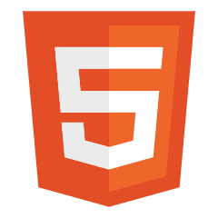
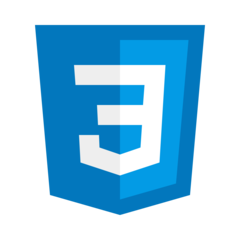

Talen
Alle programeer talen waar ik mee bezig ben

HTML
HyperText Markup Language (afgekort HTML) is een op SGML gebaseerde opmaaktaal voor de specificatie van documenten, voornamelijk bedoeld voor het wereldwijde web. Het is de standaard opmaaktaal voor webpagina's.

CSS
Css bied mogelijkheid om de vormgeving van webpagina's los te koppelen van hun feitelijke inhoud en centraal vast te leggen. Het begrip "cascading" (als een waterval) verwijst naar de mogelijkheid van het overerven van opmaak-eigenschappen.

Javascript
Veel Internet websites bevatten JavaScript, een programmeertaal voor scripts die wordt uitgevoerd in de webbrowser om specifieke functies op de webpagina functioneel te maken.